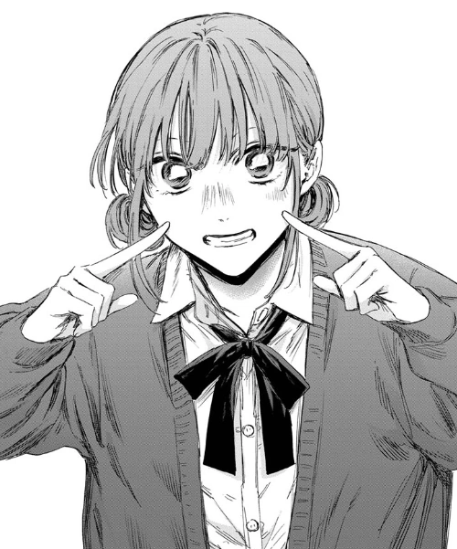

Master themed chapters sequentially to unlock story dialogues and win Chiyo-chan's hand in marriage!
Click on any character cell to hear its native pronunciation. Switch to Study mode to test your memory!

Double-click or double-tap a category to study it exclusively